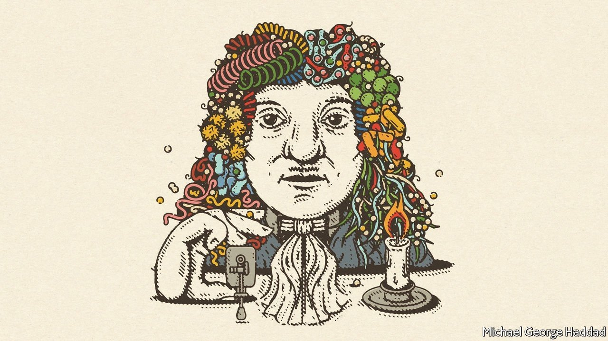

Regarding your leader calling for life sentences to be reduced (“Pointlessly punitive”, July 10th), for the past 29 years I have spent countless hours meeting men serving life sentences without parole. One of them is my biological father. Your arguments about excessive sentencing struck a chord. On Father’s Day, I was reminded of the diminishing returns of many life sentences during my visit to several prisoners aged over 60. These remorseful men believe they could use their experience to turn around almost any troubled youngster. That is a bold claim, but these older offenders could help in programmes to tackle rising crime.
Like too many black Americans, I have family members who have succumbed to gun violence. So although I am not overly sympathetic towards convicts, I do think there should be the possibility for rehabilitation and forgiveness. Many life sentences go beyond the point of being productive.
STEFAN JOHNSON New York
I was disappointed with your Benthamite conclusion that prisons are about preventing crime, not atonement. That asserts just one viewpoint about why we penalise people and disregards a rich debate about the nature of punishment. Imprisonment is not just to deter people from committing crime, it is also a catharsis, and retribution for both the victim of the crime and a society morally disgusted by it.
ALEX REAY Coventry
You held up Norway as a model for sentencing. But consider that Anders Breivik was given just 21 years, Norway’s maximum life sentence, for the murder of 77 people. That puts the value of killing a person at a little over three months in prison. Your description of Brenton Tarrant’s sentence of life without parole as “wrong” for murdering 51 people at two mosques in New Zealand was equally galling.
You condoned a policy that values victims' lives cheaply. Thankfully, most American jurisdictions are unlikely to adopt your recommendations.
EVAN NEBEL Arlington, Virginia
A new war on drugs
“Narco-state on the Med” (July 24th) scratched the surface of the Captagon drug trade in Syria. Captagon is not a new drug. It was first manufactured in the early 1960s and originally prescribed for depression and narcolepsy. By the 1980s it was banned because of its terrible side effects. It has now made a huge comeback in the Syrian war as a source of profit for powerful men on all sides of this tragedy. This hideous drug is ravaging entire communities and countries. Just ask doctors in Saudi Arabia, who are facing Captagon addiction of epidemic proportions among Saudi teenagers and young men.
For the story in Syria I recommend “Proof of Life”, a book by Daniel Levin, which tells not only how Captagon generates enormous profits in the country, but also the way the drug lords combine the business with the weapons trade and human trafficking, from sex slavery to Western hostages.
MICHAEL RICHTER St Gallen, Switzerland

Spreading disease theories
Your What If? column about why “germ theory” was not adopted in the 1680s was based on a false assumption (“Germ of an idea”, July 3rd). As I noted in a book with the same title as your article, many early modern natural philosophers believed that some diseases might spread from person to person, by contagion, because of a tiny pathogen.
Given the state of microscopy there were many different “germ theories”. Benjamin Marten, a physician in London, published an especially prescient theory of animate contagion in 1720. Carl Linnaeus, a botanist in the 18th century, claimed that minuscule living pathogens caused disease. These ideas gradually spread. By the late 18th-century, possibly most British physicians believed that diseases including typhus, smallpox, measles, tuberculosis, childbed fever and influenza circulated by person-to-person contagion, but were agnostic about the exact nature of the agent.
The story is not about an intellectual or cultural failure. It is about doctors wrestling with unreliable and fragmented evidence and developing a range of plausible explanations, some of which were later vindicated. Our own confusion about how covid-19 spread (by contaminated surfaces, droplets or aerosols) should give us some humility in assessing the efforts of scientists centuries ago.
MARGARET DELACY Portland, Oregon
The efforts of Ignaz Semmelweis to prevent post-partum maternal deaths from sepsis were “ignored”, you say. Not quite. His colleagues were so offended by the implication that their contaminated hands were killing their patients that they attacked Semmelweis ruthlessly. Eighteen years after his discoveries, his colleagues committed him to an asylum, where he was beaten by the guards and died.
Sadly, it's the usual story when anyone presents evidence that contradicts groupthink. Alfred Wegener, an amateur geologist, was similarly assailed by professional geologists for his theory of continental drift, 50 years before his ideas were accepted. Delia Bacon was harassed for proposing that a group of Elizabethan writers collaborated on the works of Shakespeare, more than a century before the New Oxford Shakespeare edition agreed that a group of writers contributed to Shakespeare's plays.
We don’t always welcome new ideas.
RICHARD WAUGAMAN Potomac, Maryland
For all intensive purposes
Johnson wrote about eggcorns, solecisms that can “make more sense than the phrases they replace” (July 17th). One of the most pervasive eggcorns appears in “The Twelve Days of Christmas”, where “four colly birds” has become “four calling birds” (though what are calling birds?).
HENRY PLOEGSTRA Holland, Michigan
My favourite eggcorn is duct tape. The cloth tape with an adhesive backing was originally called duck tape. It was developed to seal ammunition boxes on naval vessels and made from sturdy canvas duck, from the Dutch doek, also known as ducking. Duct tape is more appropriate, given the identical pronunciation and the tape’s use in air ducts.
JACK AUBERT Falls Church, Virginia
On the origin of malapropisms, Mrs Malaprop’s name was invented by Richard Sheridan in “The Rivals” as an abbreviation of the French expression mal à-propos, which can be translated as “improperly” or “at the wrong time”.
TONY HAYS San Clemente, California
Johnson’s wry note suggested replacing “one fell swoop” with “one foul swoop”. Macduff wails in Macbeth, “Did you say all? O hell-kite! All? What, all my pretty chickens and their dam, At one fell swoop?” Shakespeare is using an avian metaphor to compare the murder of Macduff’s wife and children to a hawk suddenly swooping down on defenceless prey. Surely “one fowl swoop” is to be preferred?
PROFESSOR MICHAEL MAINELLI Emeritus professor Gresham College London
This article appeared in the Letters section of the print edition under the headline "On life sentences, Syria, germs, eggcorns"